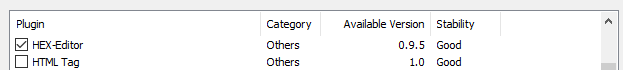
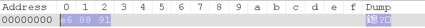
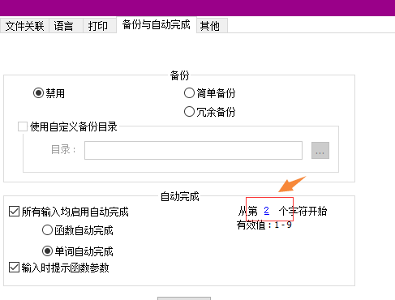

unicode编码字符集和utf-8、asci编码方式
Unicode是一个编码字符集，统一维护着世界上所有的’字符'。Unicode只是一个符号集，它只规定了符号的二进制代码， 却没有规定这个二进制代码应该如何存储。utf8只是Unicode字符集的一个具体的编码(解码)的实现方式之一，其它的还有utf-16 ,utf-32等。
BOM(Byte order mark)又称"零宽度非换行空格"（ZERO WIDTH NO-BREAK SPACE）
BOM都很熟悉，Notepad++之中就会有，以utf-8有BOM编码、以utf-8无BOM编码。
因为unicode编码规范并不知道，文档到底使用的是哪一种编码顺序(大小头)。所以规定前1-4个字节标识编码顺序。
又因为Utf-8没有大小头之分，所以可以使用BOM来标识是使用的那一种编码！
我们使用Notepad++来看下，“我"在使用utf-8无BOM编码的情况下的HEX十六进制表示法：
- 先要安装Notepad++插件HEX-Editor

编码为：
e6 88 91 - utf-8不带BOM编码情况下，16进制编码为:
ef bb bf e6 88 91
由此可见Utf-8编码的BOM为:ef bb bf
asci编码
在中文操作系统下，我们在notepad++下，使用asci码输入中文，其实使用的是操作系统默认GBK编码。
使用notepad++可以看到，“我"在ansi下的编码16进制为:ce d2,这个编码正是"我"在GBK编码字符集中的编码。
notepad++，ansi编码输入中文程序无响应
在ansi编码下，默认中文字符会被拆成2个字符。当我们设置:
“首选项->自动完成->单词自动完成"并且从"第1个字符开始"的时候,会默认从未知字符开始自动完成,notepad++就卡死了。
解决方法：将"从第1个字符开始"改成"从第2个字符开始"即可

参考文献